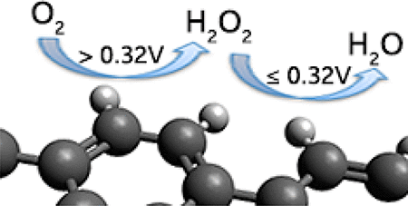
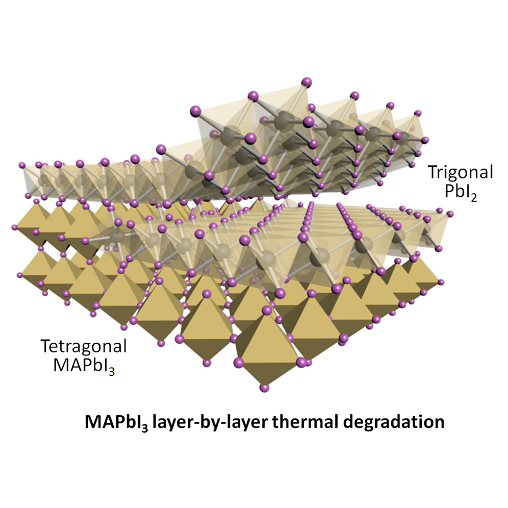
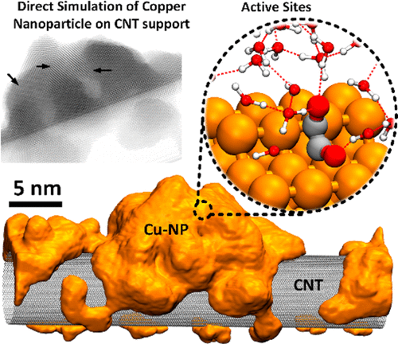
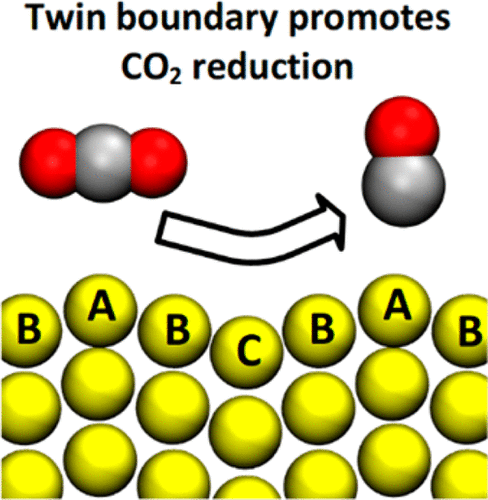
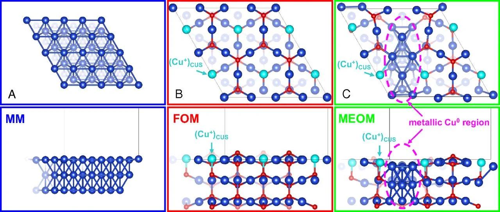
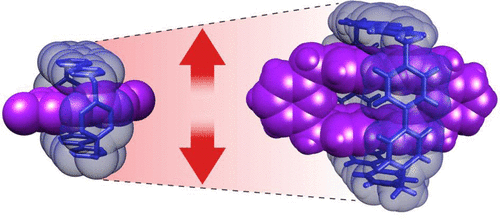
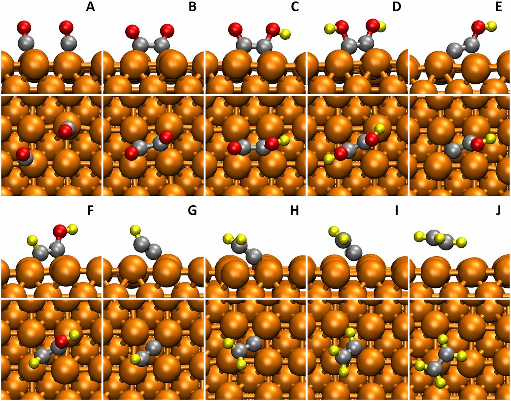
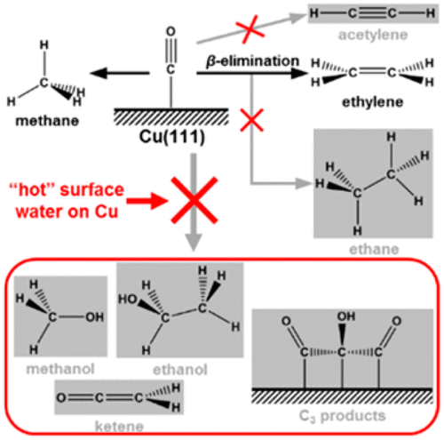
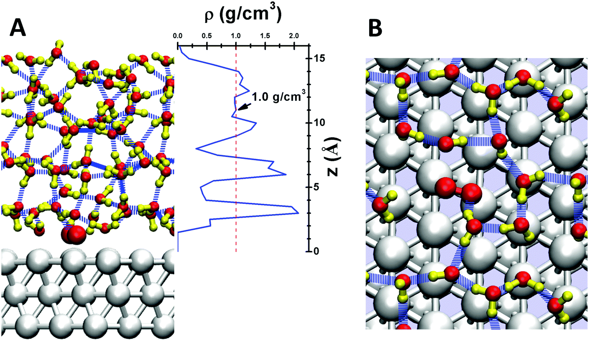

2017
- The Oxygen Reduction Reaction on Graphene from Quantum Mechanics: Comparing Armchair and Zigzag Carbon Edges
- Ly, Q.; Merinov, B. V.; Xiao, H.; Goddard, W. A.; Yu, T. H.
- J. Phys. Chem. C 121, 24408–24417

- Layer-by-Layer Degradation of Methylammonium Lead Tri-iodide Perovskite Microplates
- Fan, Z.; Xiao, H.; Wang, Y.; Zhao, Z.; Lin, Z.; Cheng, H.-C.; Lee, S.-J.; Wang, G.; Feng, Z.; Goddard, W. A.; Huang, Y.; Duan, X.
- Joule 1 , 548-562

- Nature of the active sites for CO reduction on copper nanoparticles; suggestions for optimizing performance
- Cheng, T.; Xiao, H.; Goddard, W. A.
- Journal of the American Chemical Society 139 , 11642-11645

- Predicted Structures of the Active Sites Responsible for the Improved Reduction of Carbon Dioxide by Gold Nanoparticles
- Cheng, T.; Huang, Y.; Xiao, H.; Goddard, W. A.
- The Journal of Physical Chemistry Letters 8 , 3317-3320

- Subsurface oxide plays a critical role in CO2 activation by Cu (111) surfaces to form chemisorbed CO2, the first step in reduction of CO2
- Favaro, M.; Xiao, H.; Cheng, T.; Goddard, W. A.; Yano, J.; Crumlin, E. J.
- Proceedings of the National Academy of Sciences 114 , 6706-6711

- Cu metal embedded in oxidized matrix catalyst to promote CO2 activation and CO dimerization for electrochemical reduction of CO2
- Xiao, H.; Goddard, W. A.; Cheng, T.; Liu, Y.
- Proceedings of the National Academy of Sciences 114 , 6685-6688

- Intramolecular Energy and Electron Transfer within a Diazaperopyrenium-Based Cyclophane
- Gong, X.; Young, R. M.; Hartlieb, K. J.; Miller, C.; Wu, Y.; Xiao, H.; Li, P.; Hafezi, N.; Zhou, J.; Ma, L.; Cheng, T.; Goddard, W. A.; Farha, O. K.; Hupp, J. T.; Wasielewski, M. R.; Stoddart, J. F.
- Journal of the American Chemical Society 139 , 4107-4116

- Size-Matched Radical Multivalency
- Lipke, M. C.; Cheng, T.; Wu, Y.; Arslan, H.; Xiao, H.; Wasielewski, M. R.; Goddard, W. A.; Stoddart, J. F.
- Journal of the American Chemical Society 139 , 3986-3998

- Manipulating Stabilities and Catalytic Properties of Trinuclear Metal Clusters through Tuning the Chemical Bonding: H2 Adsorption and Activation
- Xu, C.-Q.; Xing, D.-H.; Xiao, H.; Li, J.
- The Journal of Physical Chemistry C 121 , 10992-11001

- Full atomistic reaction mechanism with kinetics for CO reduction on Cu (100) from ab initio molecular dynamics free-energy calculations at 298 K
- Cheng, T.; Xiao, H.; Goddard, W. A.
- Proceedings of the National Academy of Sciences 114 , 1795-1800

- Atomistic Mechanisms Underlying Selectivities in C_1 and C_2 Products from Electrochemical Reduction of CO on Cu (111)
- Xiao, H.; Cheng, T.; Goddard, W. A.
- Journal of the American Chemical Society 139 , 130-136

- Mechanism and kinetics of the electrocatalytic reaction responsible for the high cost of hydrogen fuel cells
- Cheng, T.; Goddard, W. A.; An, Q.; Xiao, H.; Merinov, B.; Morozov, S.
- Physical Chemistry Chemical Physics 19 , 2666-2673
